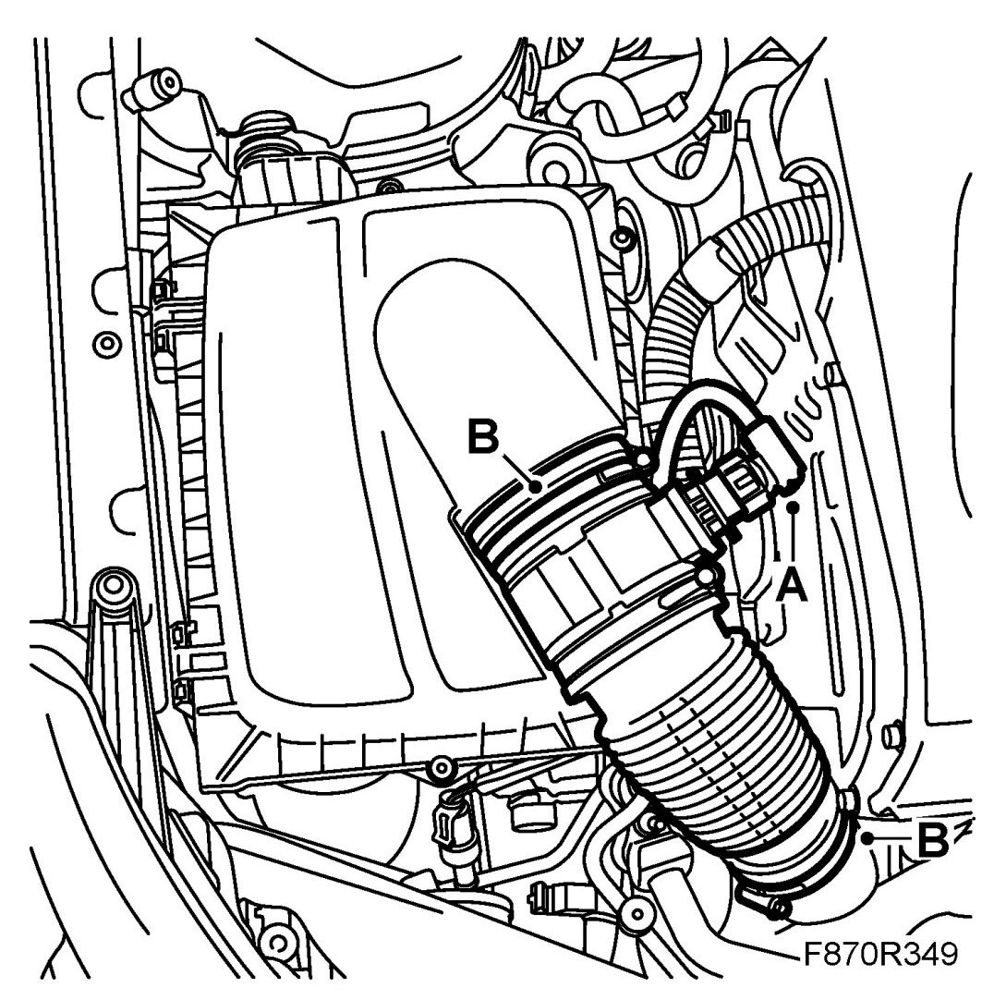
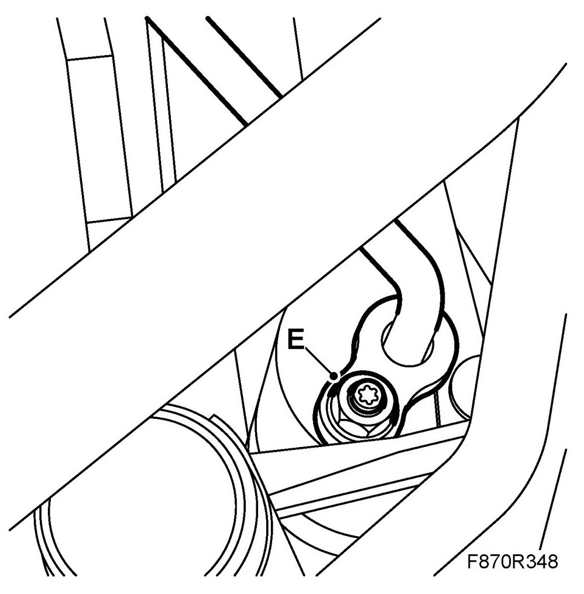
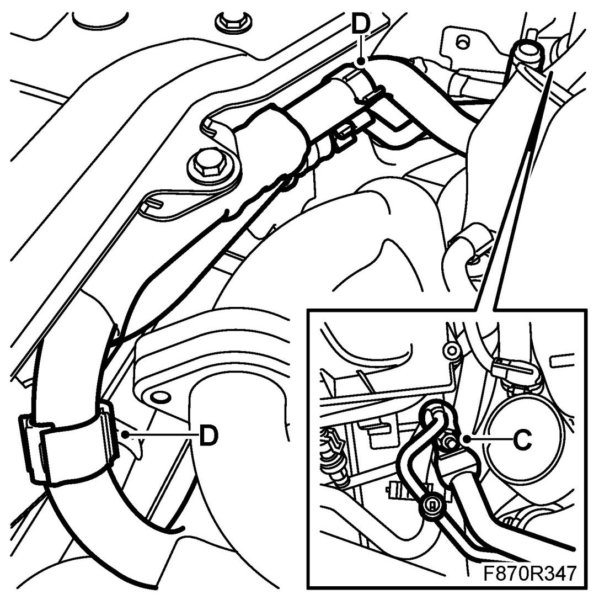

Receiver, High Pressure Pipe, Z19DTR
Receiver, High Pressure Pipe, Z19DTR
IMPORTANT: The A/C receiver and the compressor oil absorb moisture from the air, which can then not be removed. Plug all connections that are opened immediately.
To remove
1. Drain the refrigerant from the AC system.
2. Unplug the mass air flow sensor connector (A).

3. Remove the hose (B) between the turbo intake manifold and the air cleaner housing.
4. Detach the PAD connection (C) at the right-hand front structural member. Plug the openings.
5. Undo the clips (D) and lift up the pipes.
6. Detach the high pressure pipe's PAD connection (E) from the receiver. Plug the opening.

7. Carefully work the high pressure pipe up.
To fit
1. Adjust the oil quantity in the AC system.
2. Carefully work the high pressure pipe down.
3. Attach the high pressure pipe's PAD connection (E) to the receiver.
4. Attach the PAD connection (C) at the right-hand front structural member.

5. Fit the clips (D) to the pipes.
6. Fit the hose (B) between the turbo intake manifold and the air cleaner housing.
7. Plug in the mass air flow sensor connector (A).
8. Vacuum pump and fill the A/C system with refrigerant.
9. Test the A/C system. See A/C system performance test.